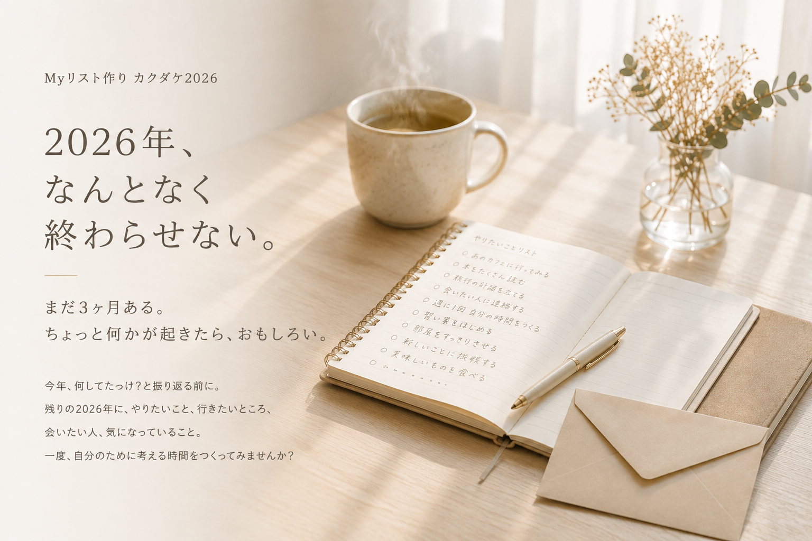
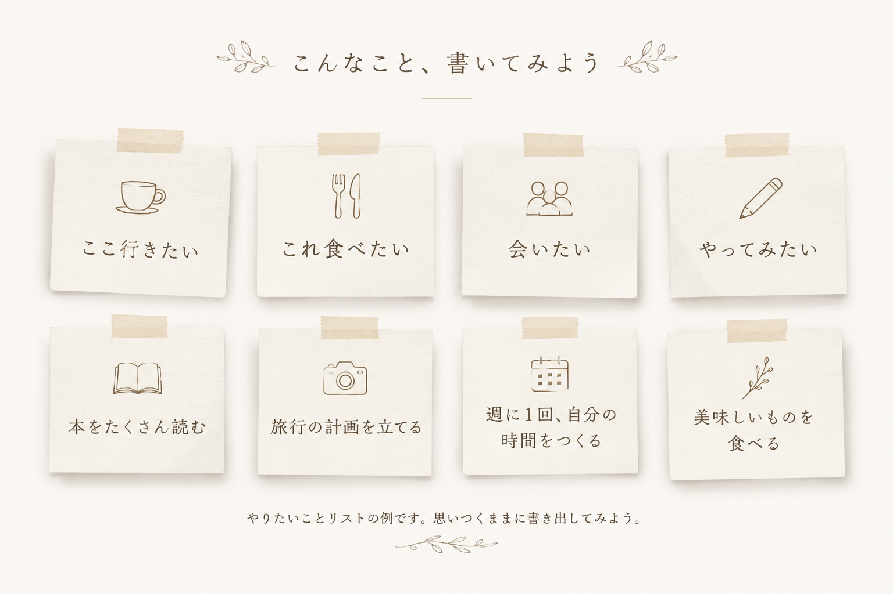
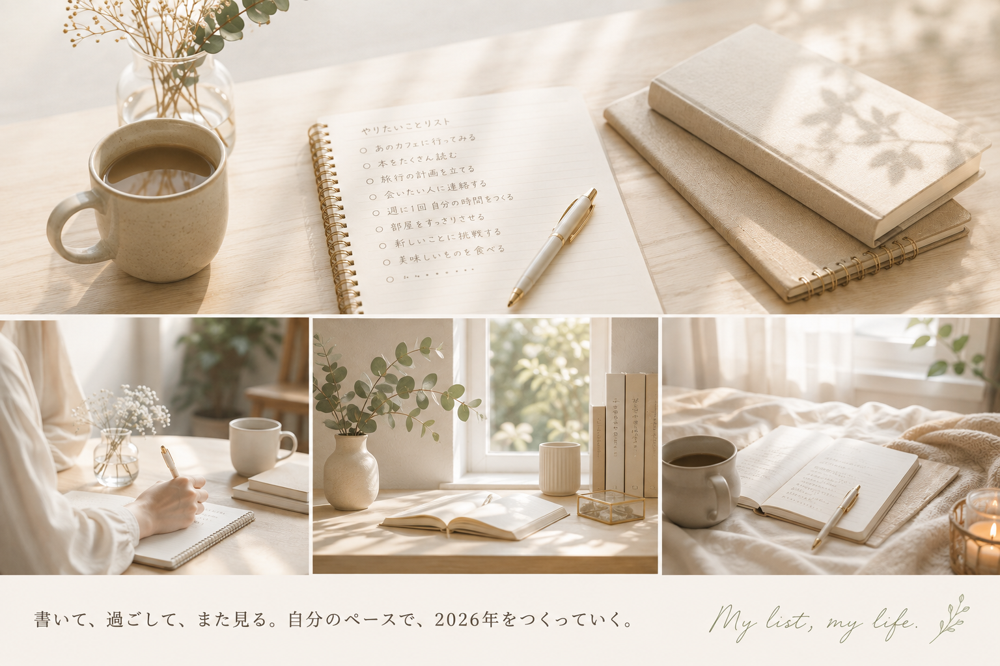

9/7月
書いてみる
残りの2026年、何をしたい？ どこへ行きたい？ 誰と会いたい？

9月7日（月）・12月7日（月）｜オンライン開催｜2回セット 5,000円
WHY NOW?
年末になって「今年はこんな一年だったな」と振り返ることはあっても、そのときにはもう今年はほとんど終わっています。
だから、その前に。9月7日（月）、2026年の残りをどんなふうに過ごしたいか、一度考えてみる。
まだ3ヶ月あるから、そこからできることがあります。
SEPTEMBER → DECEMBER
残りの2026年、何をしたい？ どこへ行きたい？ 誰と会いたい？
自分のペースで、いつもの毎日を過ごす。
できたことも、できなかったことも、思いがけず起きたことも。
一年を振り返って終わりじゃなく、今年の残りをもう一度考えられます。

CHECK IN
書いた通りに全部進むわけではありません。
少し前の自分と今の自分を比べると、「意外とやってた」「今はもう違うかも」「書いていなかったことが始まっていた」なんてこともあります。
定点的に見てみるから、気づけることがあります。
MAKE TIME
やりたいことなんて、ひとりでも書けます。いつでも書けます。
でも、「いつでもできること」って、意外とやらなかったりする。
毎日のやることに追われていると、自分が何をしたいのかを考える時間は後回しになりがちです。
だからカクダケでは、自分のことを考えて、書く時間を先に予定に入れています。

VOICES
書いたことで動いたり。立ち止まったことで気づいたり。
その変化は、人それぞれです。
はじめて参加してみて
忙しい毎日の中で「やりたいこと」を考える余裕がなかったけれど、書き始めると楽しいことが浮かび、自分の中にエネルギーがあることに気づいたそう。
その後は、何かを増やすだけではなく、今あるものに集中するために「やらない」と決めるという選択にもつながりました。
初めてでも、書くことで見えてくるものがある。
参加レポートを読む →続けて見えてきたこと
これまで書いてきたリストを見返し、深掘りする中で、実際に予定になったことや始めたことだけではなく、そこに並んでいるものから「今の自分が大切にしたいもの」にも気づいたそう。
続けて見ていくから、気づけるものがある。
Myリストと振り返りを読む →あなたの場合は、
どんなことが起きるでしょう。
TOGETHER
「Myリスト作り カクダケ2026」は、2026年を通して3ヶ月に一度、みんなで集まっています。
3月、6月と開催してきて、今年残っているのは9月7日（月）と12月7日（月）の2回。
今回募集するのは、新しく始まる3ヶ月プログラムではありません。
すでに年間で参加しているみんなの中に入って、2026年最後の2回を一緒に過ごしてみませんか？というお誘いです。
誰かのワクワクから、
自分のワクワクが見つかる。
YOUR STORY
意識しなければ、毎日はけっこうなんとなく過ぎていきます。
人生の全部を思い通りにはできないけれど、「こんなふうに過ごしたい」「これをやってみたい」と、自分で選べることはある。
自分の一年に、
自分で関わってみる。
そして12月31日に、「2026年、こんな一年だったな」と振り返れたら。
2026 LAST TWO
すごいことじゃなくていい。
ちょっと何かが起きたら、おもしろい。
Myリスト作り カクダケ2026
第3回
10:00〜12:00 Myリスト作り
13:30〜14:30 深掘り会
第4回
10:00〜12:00 Myリスト作り
13:30〜14:30 深掘り会
開催方法オンライン（Zoom）
2回セット参加費5,000円
9月・12月それぞれの Myリスト作り＋深掘り会 すべて含まれています。9月に書いて、3ヶ月を過ごして、12月にもう一度。
あなたの2026年に、どんな物語が増えるでしょう。